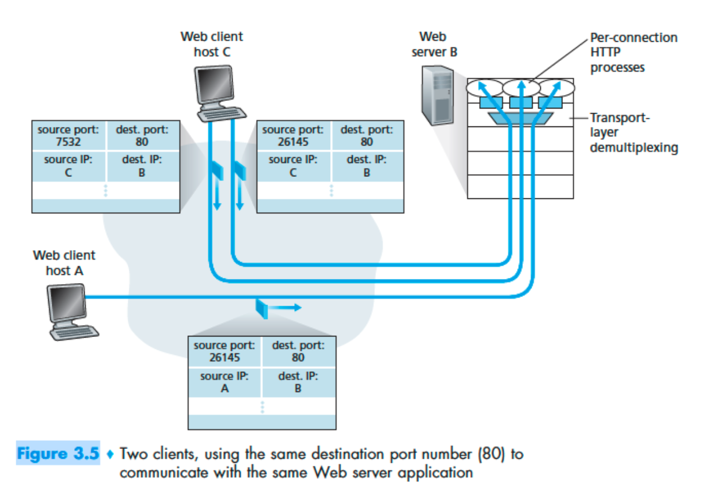

# Question 1
What are the source and destination port values in the segments flowing from the server back to the clients’ processes? What are the IP addresses in the network-layer datagrams carrying the transport-layer segments?

Answer 1
Host A Request:
Source Port: 26145, Source IP: a, Destination Port: 80, Destination IP: b
Server’s Response to Host A:
Source Port: 80, Source IP: b, Destination Port: 26145, Destination IP: a
Host C (Left) Request:
Source Port: 7532, Source IP: c, Destination Port: 80, Destination IP: b
Server’s Response to Host C (Left):
Source Port: 80, Source IP: b, Destination Port: 7532, Destination IP: c
Host C (Right) Request:
Source Port: 26145, Source IP: c, Destination Port: 80, Destination IP: b
Server’s Response to Host C (Right):
Source Port: 80, Source IP: b, Destination Port: 26145, Destination IP: c
| Scenario | Source Port | Source IP | Destination Port | Destination IP |
|---|---|---|---|---|
| Host A → Server | 26145 | a | 80 | b |
| Server → Host A | 80 | b | 26145 | a |
| Host C (Left) → Server | 7532 | c | 80 | b |
| Server → Host C (Left) | 80 | b | 7532 | c |
| Host C (Right) → Server | 26145 | c | 80 | b |
| Server → Host C (Right) | 80 | b | 26145 | c |
Importance of Demultiplexing:
On Host C, two different processes (left and right) are communicating with the same server (b), and both use the same server port (80). The operating system on Host C uses the destination port number (26145 vs. 7532) to correctly deliver incoming segments to the appropriate process. Since these port numbers are different, the segments are delivered to the correct sockets (and therefore to the correct processes).